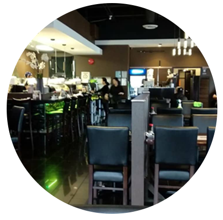

Welcome to Sushico Langley
SushiCo is a modern Japanese restaurant with
a simple, easy concept for everyone who
would enjoy Asian Cuisine.
a simple, easy concept for everyone who
would enjoy Asian Cuisine.

Enjoy Delightful Dining
Come and enjoy our delightful dishes
with your friends, family or
even for your next business meeting.
Our presentation and our menu
will surely have you coming back for more.
with your friends, family or
even for your next business meeting.
Our presentation and our menu
will surely have you coming back for more.